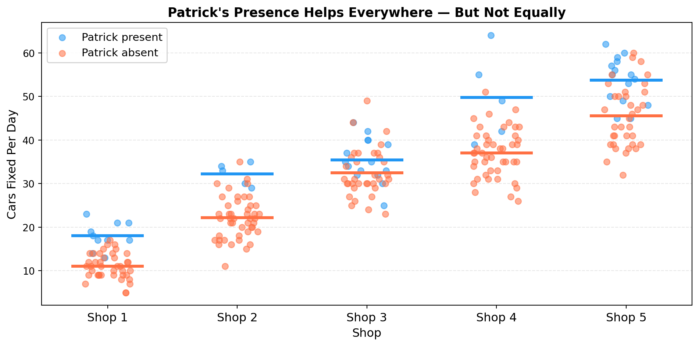
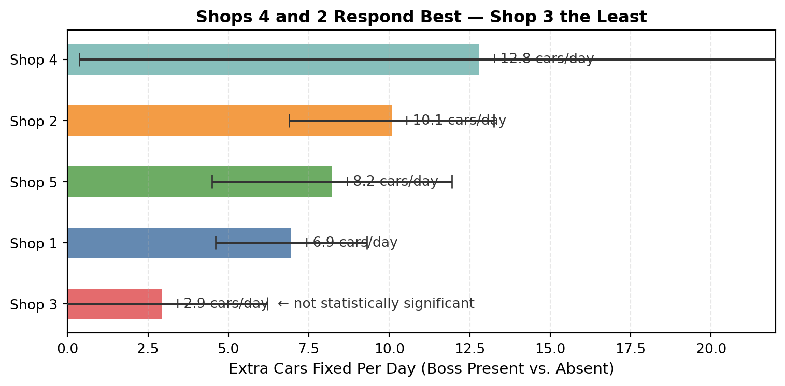
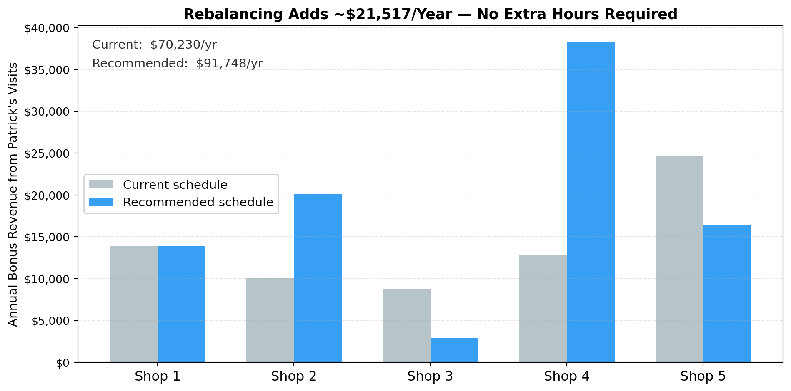

Where Should Patrick Be?
A Scheduling Guide for Five Shops — Based on 250 Days of Data
The Short Answer
Patrick’s presence lifts output at every shop — but the boost at his brother’s Shop 3 is the weakest of all five, and may just be random variation. Meanwhile, Shops 4 and 2, where his presence makes the biggest difference, rarely see him. Shifting roughly 10 visits per year away from Shop 3 and toward those two shops could add ~$21,500 in annual revenue without any extra hours or staff.
What 250 Days of Data Look Like
Every dot below is one day of work. Blue dots are days Patrick showed up; orange dots are days he didn’t. The thick horizontal bars mark each group’s average.
Two things are obvious just from this chart:
- The blue average is always above the orange average — Patrick’s presence helps at every shop.
- The gap between blue and orange is much bigger at some shops than others. Shop 3 barely looks different.
Where His Time Is Most Valuable

Shop 3 stands out — but not in a good way. The +2.9 cars/day estimate doesn’t clear the bar for statistical significance (the confidence interval includes zero). That means the data can’t rule out that Shop 3 gets zero benefit from Patrick’s visits. The boost may be real, or it may just be a run of good days.
Shop 4 shows the biggest lift (+12.8 cars/day) but also the widest error bars — because Patrick has only shown up there 5 times in the dataset. The estimate is promising but noisy.
How Sure Can Patrick Be?
Here’s the honest picture on uncertainty:
| Shop | Lift estimate | 95% range | Boss-present days | Verdict |
|---|---|---|---|---|
| 1 | +6.9 | +4.6 to +9.3 | 10 | Solid — trust this |
| 2 | +10.1 | +6.9 to +13.2 | 5 | Promising but thin data |
| 3 | +2.9 | −0.3 to +6.2 | 15 | Inconclusive |
| 4 | +12.8 | +0.4 to +25.2 | 5 | High potential, high uncertainty |
| 5 | +8.2 | +4.5 to +11.9 | 15 | Solid — trust this |
The ranges above capture where the true lift likely falls. A range that crosses zero (like Shop 3) means we cannot confidently say Patrick’s presence helps there at all. A range that stays well above zero (like Shop 1 and Shop 5) means the positive effect is real.
Bottom line on uncertainty: We have good confidence on Shops 1, 2, and 5. We’re flying a bit blind on Shops 3 and 4 — more data would sharpen those estimates significantly.
The Revenue Case
Assuming $200 per car, the chart below compares how much annual bonus revenue Patrick’s visits generate under his current schedule versus the recommended rebalancing.

The Shop 3 bar shrinks under the recommended schedule — but it doesn’t disappear. Patrick still visits his brother’s shop, just less often. The gains come from redirecting those freed-up days to Shops 4 and 2, where the data says he makes the biggest difference.
The Recommendation
Shift 10 visits per year from Shop 3 to Shops 4 and 2.
| Shop | Current visits/yr | Recommended | Change |
|---|---|---|---|
| 1 | 10 | 10 | — |
| 2 | 5 | 10 | +5 |
| 3 | 15 | 5 | −10 |
| 4 | 5 | 15 | +10 |
| 5 | 15 | 10 | −5 |
Projected gain: ~$21,500/year at no additional cost.
One important caveat: Shops 2 and 4 have very limited boss-present data (5 days each). Treat the first year of the new schedule as a live experiment. Track the numbers and revisit after collecting another 20–30 visits at each shop. The data will sharpen considerably, and the recommendations may shift.
The data is clear on one thing: spending 30% of his visits at Shop 3 — where the effect is weakest and possibly zero — is the easiest thing Patrick can change.